열교환기의 설계
열교환기는 고온 유체로부터 저온유체로 열을 전달하는 장치를 말한다. 이때 열을 전달할 때 유체가 상변화를 하는 경우와 상변화를 하지 않는 경우가 있다. 보통 고체벽을 매개로 서로 다른 유체가 열을 교환하는 기기를 말한다. 열교환기를 선택할 때에는 경제성, 크기, 무게 등의 변수를 고려하여 상황에 가장 적합한 기기를 선택하여야 한다.
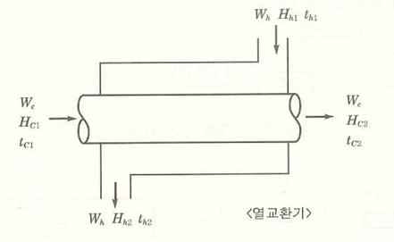
이것은 열교환기의 개략도이다. 먼저 고온의 유체가 지나가는 동안 튜브에 열을 공급하고, 저온의 유체는 이 열을 받아 온도가 올라가게 된다. 반면 고온의 유체는 열을 내줬으므로 온도가 낮아지게 된다. 즉 열을 교환하는 것이다.
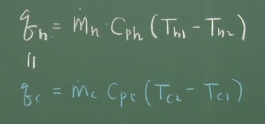
이 사이에 이동한 열은 위와 같다. q=cmt이므로 이 공식을 사용했다.
이때 고열원의 온도차와 저열원의 온도차는 열교환기의 방식이 향류나 병류냐에 따라 달라진다.
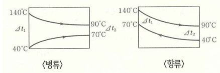
근데 보통 여기서 q값을 q=cmt를 쓰지 않고, 총괄 열전달 계수를 이용하여 다시 계산한다.
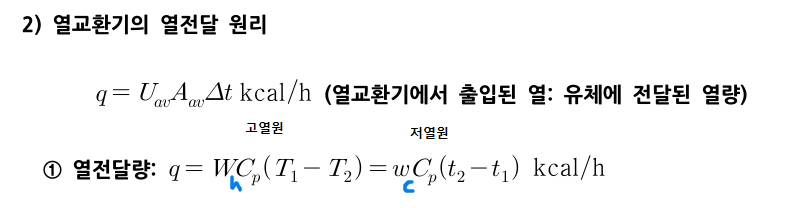
이때 열교환기에서 쓰는 △t는 밑에 사용된 q=cmt의 온도차이와는 다르다. U는 총괄열전달계수이고 A는 전열면적이다. t는 평균온도차를 의미한다.
보통 일반적으로는 대수평균을 쓴다고 보면 된다.
또한 열교환 메커니즘을 보면, 유체가 튜브까지 대류로 열을 전달하고, 튜브 표면에서 전도가 일어난 후 내부 유체에 대류를 하므로 메커니즘은 대류 전도 대류이다. 따라서 총괄 열전달계수를 구해보면 다음고 ㅏ같다.
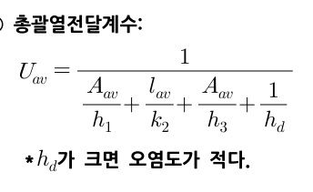
정리하면 다음과 같다.
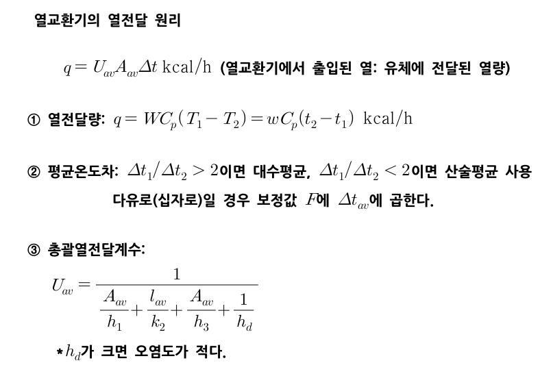
이제 향류와 병류에 따른 온도차를 살펴보도록 하자.
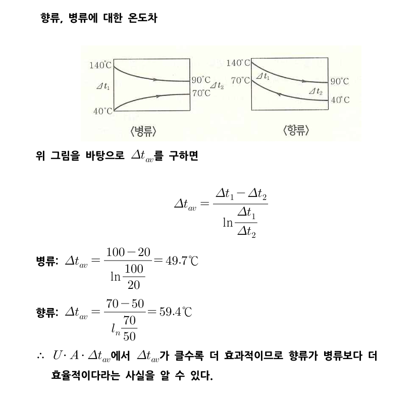
둘이 일단 유입온도와 최종 온도는 같은 걸 알 수 있다. 저열원은 40->70이 되고 고열원은 140->90이 된다. 이때 각각의 경우 온도 차이를 구해보도록 하자. 이는 양단에서의 온도차이를 의미하며 이를 평균온도차의 대수평균식에 대입하면 다음과 같다.
대부분의 경우 향류가 더 효과적이다.
이제 열교환기 내부의 에너지 수지를 살펴보겠다.
1)이중관 열교환기의 열 수지
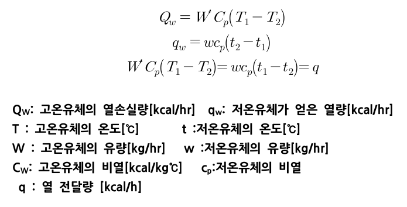
만약 상태변화가 있다면 다음처럼 바뀐다.
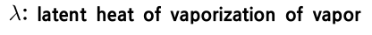
이제 여기서 총괄열전달계수U를 도입하여 q=UAT형태로 나타내보자.
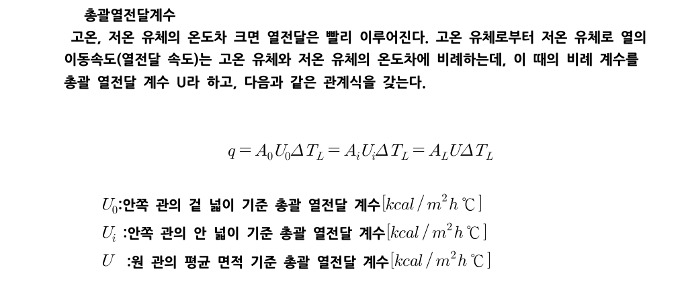 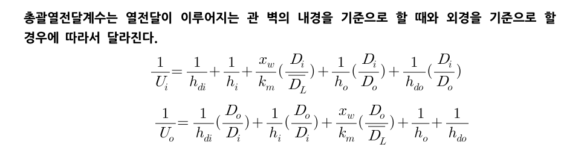
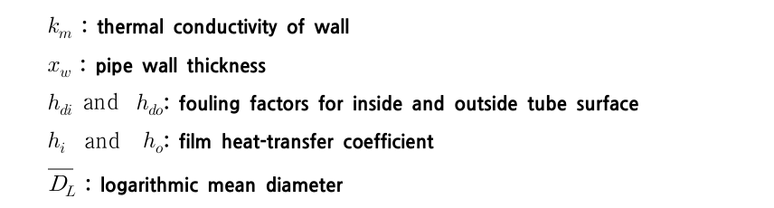
그리고 대수평균 온도차는 다음처럼 구한다.,
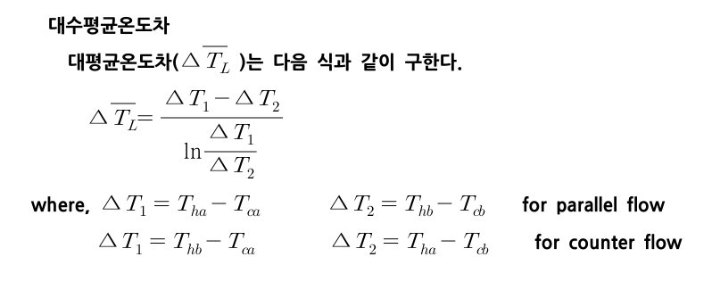
열교환기 효율도 알아보자.
위 내용을 종합하여 열교환기에서 총괄열전달계수를 구할 수 있다.,
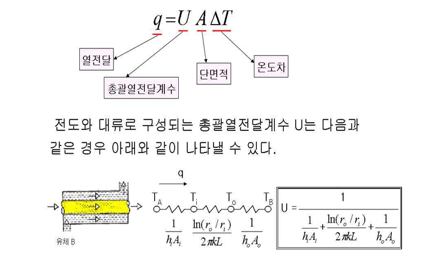 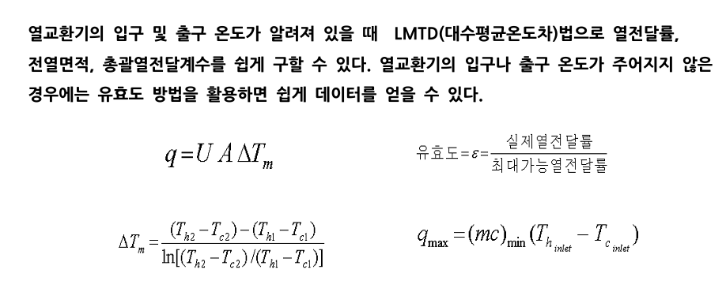 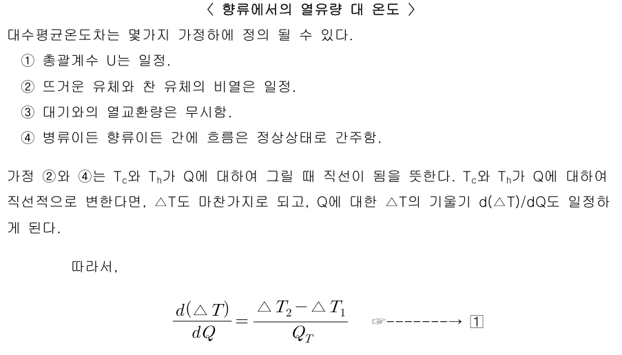 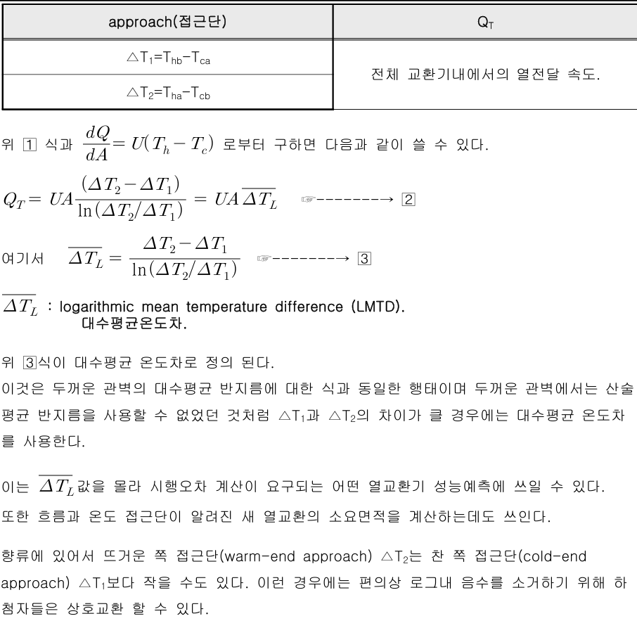